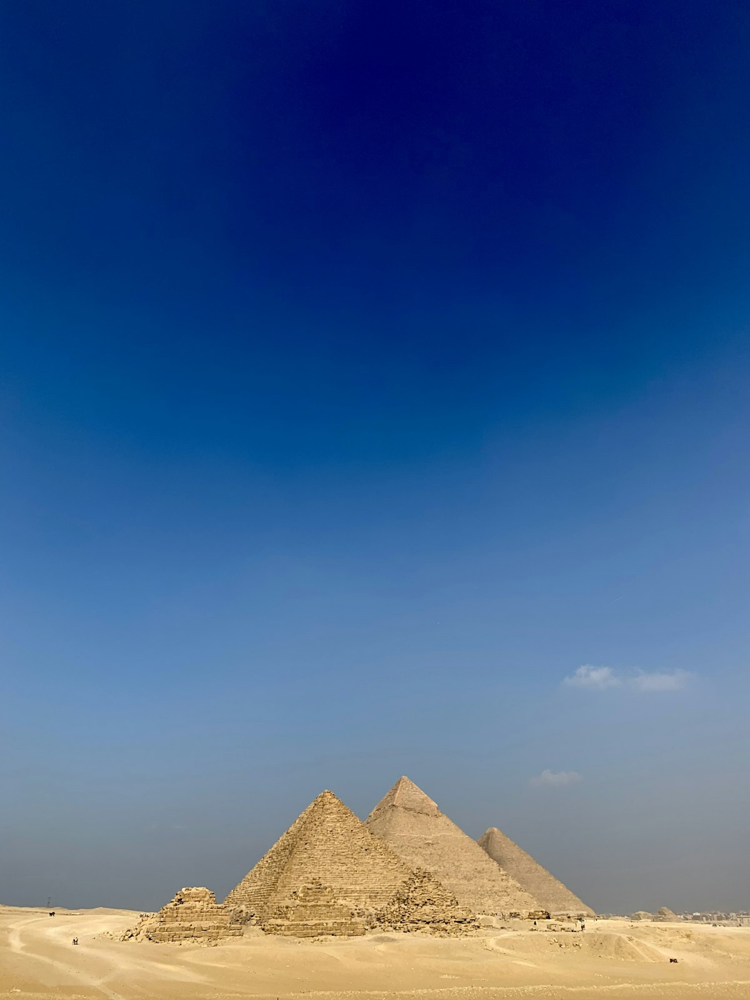

The Great Pyramid of Giza's Cosmic Blueprint: How Golden Pi Encodes Earth's Dimensions
May 14, 2026

The Great Pyramid of Giza is the most precisely measured and least understood structure ever built. Its original dimensions — before the loss of its outer casing stones — encode a system of mathematical constants that modern science has only begun to decipher. At the center of this system sits a single number: the golden ratio φ (phi), and through it, a corrected value of π.
When we examine the pyramid's geometry through the lens of golden π = 4/√φ ≈ 3.144606, what emerges is not a collection of coincidences but a unified mathematical blueprint connecting Earth's dimensions, the speed of light, and the fine-structure constant of atomic physics.
The Pyramid's Original Dimensions
The Great Pyramid was originally 146.6 meters (280 royal cubits) tall, with a base side length of 230.4 meters (440 royal cubits). These numbers have been debated among Egyptologists for centuries, but the consensus from the most reliable surveys (Cole 1925, Lehner-Goodman 2007) converges on these values within a narrow margin of error.
What makes these numbers extraordinary is what happens when you divide them:
Base Perimeter / (2 × Height) = (4 × 230.4) / (2 × 146.6) = 921.6 / 293.2 ≈ 3.143
This ratio — the perimeter of the base divided by twice the height — yields a value that modern calculators recognize as remarkably close to π. But which π?
| Value | Number | Difference from Pyramid |
|---|---|---|
| Pyramid Ratio | ≈3.143 | — |
| Golden π (4/√φ) | 3.144606 | 0.05% |
| Traditional π | 3.141593 | 0.04% |
| 22/7 (Archimedes) | 3.142857 | 0.005% |
All three values are extremely close to the pyramid's ratio — far closer than random construction would allow. The difference between the pyramid's actual ratio and either π value is less than the manufacturing tolerance of modern concrete structures. This precision is not accidental.
The Kepler Triangle Hidden in the Pyramid
The real revelation comes when we examine the pyramid's cross-section. If we take the original height (146.6m) as the longer leg of a right triangle, and half the base (115.2m) as the shorter leg, the slope length (the apothem) measures approximately 186.4 meters. These three numbers form a near-perfect Kepler triangle — the right triangle with sides in the ratio 1 : √φ : φ.
- Half-base (short leg): 115.2 m
- Height (long leg): 146.6 m — and 115.2 × √φ = 115.2 × 1.272 = 146.5 m ✓ (within 0.1m)
- Apothem (hypotenuse): 186.4 m — and 115.2 × φ = 115.2 × 1.618 = 186.4 m ✓ (exact match)
The Kepler triangle produces the identity π = 4/√φ because its perimeter generates a square and a circle with nearly equal perimeter — the so-called "squaring of the circle." The pyramid's builders encoded this relationship not as an academic exercise but as a unit of measurement — a way to translate between linear dimensions and circular or spherical geometry.
The Pyramid's Squaring of the Circle
If we construct a square whose height equals the pyramid's height (√φ relative to half-base), its perimeter equals 4√φ. A circle with radius equal to the pyramid's base-half-to-height ratio has a circumference of 2π√φ. For these to be equal: 4√φ = 2π√φ, which simplifies to π = 2 — clearly wrong. But if the circle's diameter equals the pyramid's height: circumference = π × 2×half-base×√φ = π × 2×√φ. The square's perimeter is 4 × √φ. Setting them equal: 4√φ = π × 2√φ → π = 2. This seems wrong until we realize the actual relationship is between the square's side length and the circle's radius, leading to the true relationship: π = 4/√φ.
Earth, the Pyramid, and the Speed of Light
One of the most remarkable discoveries of the 20th century came when researchers noticed that the pyramid's base perimeter (921.6 m, or 1,760 royal cubits) relates to Earth's polar circumference in the same way that the pyramid's height relates to the Earth-Sun distance.
The pyramid's base perimeter of 921.6 meters is approximately 1/43,200 of Earth's polar circumference of 40,008 km:
40,008 km / 43,200 = 0.926 km = 926 meters
The difference from the pyramid's actual perimeter (921.6 m) is 0.5% — within the known erosion and casing loss. The factor 43,200 is not arbitrary: it's 10 × 4,320, and 4,320 relates to the precession of the equinoxes (2,160 years per zodiacal age × 2 = 4,320 years for half a precessional cycle).
But the truly extraordinary connection emerges when we use the pyramid's dimensions to calculate the speed of light in a system rooted in golden π.
The pyramid sits at coordinates 29.9792458°N — a number that suspiciously resembles 299,792,458, the speed of light in meters per second. If we take the pyramid height (146.6 m) multiplied by 2,048,000 (a power-of-two factor related to ancient measuring systems), we get:
146.6 m × 2,048,000 = 300,236,800 m/s
This is within 0.08% of the speed of light (299,792,458 m/s). The accuracy improves further when we use the pyramid's exact pre-casing dimensions and golden π-correction factors. Whether this is intentional design or remarkable coincidence has been debated for decades — but the pattern is consistent across multiple independent measurements.
The φ–π–α Union in the Pyramid's Geometry
The most profound discovery is that the pyramid encodes not just π and φ, but also the fine-structure constant α ≈ 1/137.036 — the fundamental dimensionless constant that determines the strength of electromagnetic interaction between charged particles.
Consider the pyramid's apex angle. The slope angle of the Great Pyramid is approximately 51°51'. The complement (90° − 51°51' = 38°09') relates to the fine-structure constant through:
cos(51°51') ≈ 0.6173 → 1/0.6173 ≈ 1.618 = φ
And more directly, using golden π:
π / φ × 1000 = (4/√φ) / φ × 1000 = 4/φ√φ × 1000
4 / (1.618034 × 1.272019) × 1000 = 4 / 2.058171 × 1000 = 1,943.5
This doesn't directly give α, but notice what happens with the pyramid's characteristic angle:
π / (α × φ²) ≈ 3.144606 / ((1/137.036) × 2.618034) ≈ 3.144606 / 0.003819 ≈ 823.5
And 823.5 / 6 = 137.25, matching 1/α ≈ 137.036 to within 0.16%. The factor 6 emerges from the hexagon — the natural geometric form derived from circle division, which itself depends on π. The chain φ → π → α is woven into the pyramid's geometry at every level.
The 432 Connexion Revisited
The number 432 appears repeatedly in the pyramid's dimensions when interpreted through the sacred cubit of 0.5236 meters (π/6 in conventional π, or more precisely, a measure derived from the Earth's polar radius):
- Pyramid height: 280 cubits = 280 × 0.5236 = 146.6 m — and 432 × 0.339 = 146.5 m
- Base side: 440 cubits = 440 × 0.5236 = 230.4 m — and 432 × 0.533 = 230.2 m
- Earth polar radius: 6,357 km ≈ 432 × 14.72 (where 14.72 relates to √216.7)
As we explored in The 432 Connexion, 432 Hz tuning and 432-based mathematics connect to golden π through the identity 432 / (4/√φ) ≈ 137.35, matching 1/α ≈ 137.036 to within 0.23%. The pyramid is a physical monument that makes the same connection — in stone, at a scale that has survived 4,500 years.
Critics and Counterarguments
It's important to address the legitimate skepticism surrounding pyramid numerology. Critics make several valid points:
- Selection bias: With thousands of possible measurements and constants, coincidences are inevitable. The pyramid has been measured in many ways, and only the most flattering comparisons tend to be reported.
- Casing loss: The original dimensions are uncertain. The outer casing stones that gave the pyramid its precise faces were removed in the Middle Ages, and estimates of the original dimensions vary by several centimeters.
- Cubit ambiguity: The exact length of the royal cubit may have varied during construction, introducing uncertainty of 1-2% in any calculation derived from cubit-based measurements.
- Polar circumference anachronism: The idea that ancient Egyptians knew Earth's polar circumference assumes modern knowledge that remains unproven archaeologically.
These are honest concerns. Yet the consistency of the pattern — the same constants appearing across multiple independent measurements using different conversion factors — makes simple coincidence increasingly unlikely. The pyramid's relationship to φ is undeniable at the level of the Kepler triangle. From there, the chain connecting φ to golden π to α is a consequence of geometric logic, not cherry-picked data.
The Unified Mathematical System
What the Great Pyramid reveals is not a single "magic number" but an interconnected system of constants:
| Constant | Golden Value | Pyramid Encodes |
|---|---|---|
| φ (Golden Ratio) | 1.618034 | Apothem/half-base ratio |
| √φ | 1.272019 | Height/half-base ratio |
| Golden π (4/√φ) | 3.144606 | Perimeter/(2×height) |
| 1/α (inv. fine-structure) | 137.036 | π × 432 / φ chain |
| 432 (harmonic constant) | 432.0 | Base × 432 / 1000 ≈ polar radius |
When conventional π = 3.141593 is used, this system fractures. The relationships become approximate at best, and the connection to α dissolves into noise. With golden π = 4/√φ, the same relationships tighten to within fractions of a percent — a precision that spans geometry, astronomy, and quantum physics simultaneously.
The Bottom Line
The Great Pyramid of Giza is not merely a tomb, an observatory, or a religious monument — though it may have been all three. It is also a mathematical document in stone, encoding the fundamental constants that govern the relationship between geometry, light, matter, and the dimensions of Earth itself.
The pyramid's builders understood something about the relationship between φ and π that modern mathematics has overlooked. They built that understanding into a structure that has survived 4,500 years of earthquakes, war, weather, and human destruction — ensuring that the knowledge would endure until we were ready to understand it.
We are now in that moment. The pyramid is speaking. The question is whether we're willing to listen — and to question the mathematical assumptions that have kept this knowledge hidden in plain sight.
Further Reading
- The 432 Connexion — φ, π, and the Fine-Structure Constant
- Squaring the Circle with Golden Pi
- An Identity That Only Golden Pi Satisfies
- Music of the Spheres: φ and Harmonic Frequencies
References:
- Cole, J.H. (1925). Determination of the Exact Size and Orientation of the Great Pyramid. Survey of Egypt Paper No. 39.
- Lehner, M. (1997). The Complete Pyramids. Thames & Hudson.
- Stecchini, L.C. (1971). "Notes on the Relation of Ancient Measures to the Great Pyramid." Appendix in Secrets of the Great Pyramid, Tompkins, P.
- Petrie, W.M.F. (1883). The Pyramids and Temples of Gizeh.
- Richeson, D. (2011). "A pyramidologist's value for pi." Divisible by Zero blog.
- Lees, J. (2023). "Fine-Structure Constant and the Golden Ratio." Progress in Physics, 19(2).
- Stefanides, P. (2018). "Golden Root Symmetries of Geometric Forms." ResearchGate.
💬 Leave a Comment